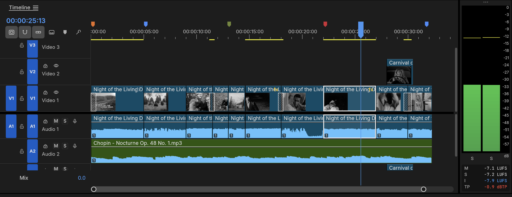
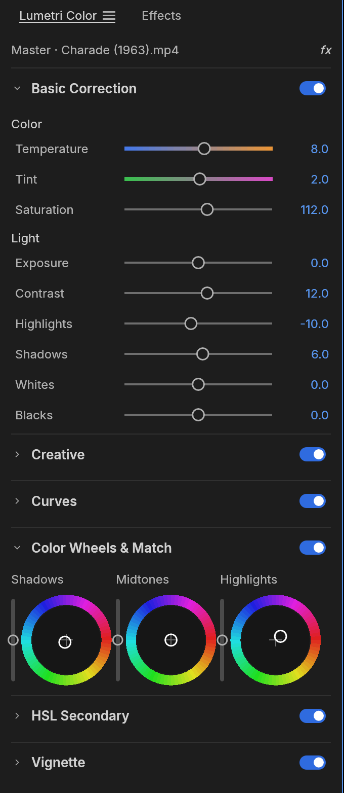
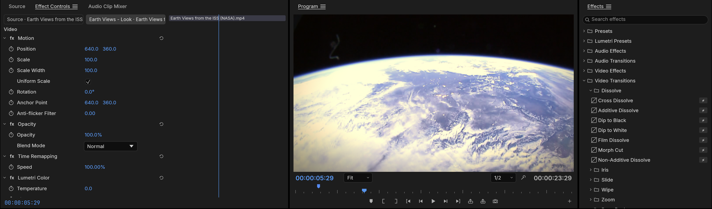
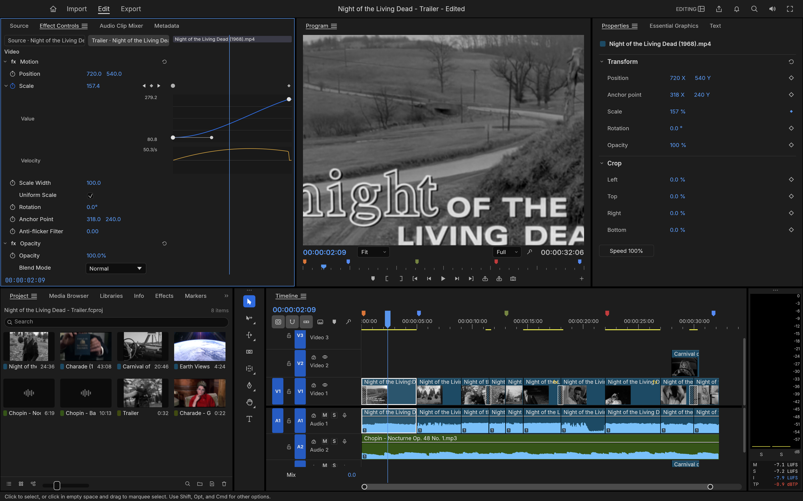

🌐 官方在线文档与静态镜像中心 (GitHub Pages)：https://shijiuwei.github.io/filmcraft-mirror-939/
📚 技术规约与文档归档菜单 (Docs Catalog)：https://shijiuwei.github.io/filmcraft-mirror-939/docs/

FilmCraft
Video editing, color and sound; an open-source, clean-room reimplementation of Adobe Premiere Pro, rebuilt in pure Rust.
An open-source, clean-room take on the Adobe Premiere Pro workflow: native on macOS, Windows and Linux, and in the browser via WebAssembly.
By the ArtCraft team.
FilmCraft on getartcraft.com · ArtCraft · All Crafting Apps
![FilmCraft in the Color workspace, mid-way through an Apollo 11 documentary cut from NASA footage: the Program monitor on the Saturn V clearing the launch tower with a Launch Complex 39A lower third and an air-to-ground subtitle, Effect Controls with Lumetri and Scale keyframes on the shot, the Lumetri Color panel, bins of NASA selects, and a timeline with 49 picture cuts, B-roll, titles, a caption track, mission audio, a ducked music bed, named markers, a rendered section and live loudness meters](docs/images/filmcraft-hero.png)
Apollo 11 - Tranquility: a three-minute documentary edit of NASA's 1969 launch, landing and moonwalk film, with subtitles from the mission transcript. Every frame in these screenshots comes from public-domain footage, decoded, composited and graded by FilmCraft's own code.
[!NOTE] ArtCraft is a community of artists from all walks of life. Digital, generative, music, games — if you make things, you're one of us. Come say hi on Discord.
Edit · Color · Effects · Audio · Titles · Formats · Export · Interchange · Agents · Get started · Downloads · Docs · Status
FilmCraft is a non-linear editor for people who know Premiere: the same panels, workspaces, tools and shortcuts, so your hands already know where everything is. Underneath, it is new from the bitstream up. The H.264, HEVC, ProRes and AAC codecs are our own, written in Rust from the public specifications. A GPU compositor works in linear light. Frame math runs on exact integer time, so edits never drift. And every action in the app is a command that an AI agent can drive as precisely as you can.
Edit

The Assembly workspace, cutting a trailer for Night of the Living Dead (1968) with an insert from Carnival of Souls (1962).
A timeline you already know. Source and Program monitors, bins with thumbnails, a multi-track timeline with patch and target buttons, sync locks and linked selection. The Editing, Assembly, Color, Effects and Audio workspaces are all there, and every panel docks wherever you want it.
- Three-point editing. Mark In and Out in the Source monitor, then insert (
,) or overwrite (.) onto the patched tracks. Lift (;) and extract (') take ranges back out. - Every trim. Ripple, roll, slip, slide, rate stretch and razor tools. Trim mode selects edit points as ripple, roll or trim, nudges them a frame at a time (
⌥←⌥→, ×5 with⇧), toggles the trim type with⌃Tand extends them to the playhead withE.QandWripple-trim to the playhead. The Trim Monitor shows both sides of the edit, and dynamic trimming trims live while it plays:Lforward,Jback,Kto stop and commit as one undo step. - Exact time. Every edit is computed on integer ticks: 254,016,000,000 per second, which divides evenly by every common frame rate and sample rate. 23.976, 29.97 drop-frame and 59.94 are exact, not approximate.
- The details pros rely on. Markers with colours, names and durations; export sequence review notes with Markers ▸ Export Markers as CSV…; add edit (
⌘K) on one or all tracks; nesting; copy, paste and paste insert; ripple delete and close gap; snapping; unlimited undo with a History panel. - Your keys. A Keyboard Shortcuts editor (
⌥⌘K) with a drawn keyboard, panel-specific shortcuts, conflict warnings and presets for FilmCraft, Premiere Pro, Final Cut Pro and Avid key layouts. - Never lose work. Saves are atomic, auto-save keeps a rolling set of versions, and a crash-recovery journal written about a second after each edit brings back unsaved changes after a crash or power cut.

Up close: dissolves, an insert on V2, the score on A2, coloured markers, and the loudness meters on the right.
Color

The Color workspace on Charade (1963), with live scopes beside the Program monitor.
A complete Lumetri-style grading panel, in the order a colourist works:
- Basic Correction: temperature and tint, exposure, contrast, highlights, shadows, whites, blacks, saturation.
- Creative: eight built-in looks with an intensity control, plus faded film, sharpen and vibrance. The looks are colour transforms written in code, not LUT files.
- Curves: an RGB curve editor with monotone-cubic interpolation (no overshoot), and hue vs saturation, hue vs hue, hue vs luma, luma vs saturation and saturation vs saturation.
- Color Wheels: shadow, midtone and highlight wheels, each with its own lightness control.
- HSL Secondary: key a colour by hue, saturation and luma, view the key as a matte, and correct only what you selected.
- Vignette: amount, midpoint, roundness and feather.
|
 The Lumetri Color panel. Basic Correction, Color Wheels and every other section, each with its own on/off switch. |
 Scopes that tell the truth. The waveform and vectorscope are computed from the graded frame. All grading happens in linear light, in 32-bit float. |
Effects and motion

NASA's Earth Views from the ISS with a look applied, and the Effects browser open on the dissolves.
- Premiere 26's full Video Effects bin (93 effects in 16 folders), the Legacy bin and the obsolete effects old projects use, plus around 30 transitions. Blurs (Bokeh, Focus, Compound), keys (Ultra Key, Track Matte), distortions (Corner Pin, Turbulent Displace, Warp Stabilizer), Lights & Glows, Immersive Video (VR) effects on equirectangular footage, Posterize Time, Echo and more. Cross dissolve, dip to black or white, film dissolve, wipes, irises, pushes, slides, zooms, page peel, cube spin and more.
- Motion and opacity on every clip: position, scale, rotation, anchor point and anti-flicker, plus 26 blend modes.
- Keyframes like Premiere's: linear, Bezier, auto and continuous Bezier, hold, ease in and ease out. Effect Controls shows a keyframe lane for every parameter under a time ruler with the playhead's handle, and each animated parameter opens into value and velocity graphs with draggable influence handles. Effect Controls and the Properties panel share the keyframe navigator (◀ ◆ ▶): add or remove the keyframe at the playhead, step to the previous or next one.
- A GPU compositor built on wgpu (Metal, Vulkan, DirectX 12, WebGPU). It samples YUV straight from the decoder with footprint supersampling and blends in linear light. A CPU path renders the same frames, and the two are tested against each other.

An eased push-in on the title card: the value graph, the velocity graph and the Bezier influence handle.
Audio
- Loudness meters to broadcast standards. Momentary, short-term and integrated loudness and true peak to ITU-R BS.1770 and EBU R128, alongside the peak meters. Our integrated reading matches ffmpeg's
ebur128filter to the tenth of a LU. - Clip effects on our own DSP library: parametric EQ, high-pass, low-pass and band-pass filters, dynamics, a true-peak limiter, delay, reverb, DeNoise, DeHummer, invert and pitch shift. Parameters can be keyframed. Effects stay continuous across scrubbing, playback and export, with latency compensated.
- Audio Track Mixer and Audio Clip Mixer: faders, pan, mute, solo, five insert slots per track (pre- or post-fader), sends, submixes and a Mix track, all sample-accurate and latency-compensated. 24 tracks with three effects each mix about six times faster than real time on one core.
- Automation like a console: Read, Latch, Touch and Write modes recorded live from the mixer during playback, shown and edited as track keyframes on the timeline. Plus the Audio Gain dialog (set, adjust, normalize) and constant-power crossfades.
- Audio-clock playback. The sound card is the master clock, so picture follows sound and never the other way round.
Titles and captions
- A real text engine: OpenType shaping with kerning and ligatures, bidirectional text, line breaking, tracking and leading, drawn in linear light and sharp at any scale or rotation.
- Type, Shape and Pen tools on the Program monitor: click to type, edit with a caret and selection, drag out rectangles, ellipses and paths. Graphic clips hold text and shape layers with fill, strokes, background and shadow, all keyframable, and edited in the Properties panel.
- Captions: caption tracks in Subtitle, CEA-608, CEA-708 and Teletext formats; import and export SRT, WebVTT and SCC with frame-exact timing; edit captions in the Text panel and burn them into exports.
Formats and codecs
No FFmpeg inside. The video codecs, AAC, Opus and the containers are our own Rust code, implemented from the public ITU-T, ISO and IETF specifications and tested frame by frame against ffmpeg as an external oracle.
| Decode | Encode | Notes | |
|---|---|---|---|
| H.264 / AVC | ✓ | ✓ | Decoder bit-exact on 37+ streams, 500–600 fps at 1080p. Encoder: High, Main and Baseline profiles, CABAC, B-frames, CRF/CBR/VBR/2-pass |
| HEVC / H.265 | ✓ | Main and Main 10, bit-exact on 41 streams (tiles, WPP, PCM, long-term references), about 225 fps at 1080p | |
| Apple ProRes | ✓ | ✓ | Decodes 422 Proxy to 4444 XQ; export writes 422 HQ |
| AAC-LC | ✓ | ✓ | |
| VP9 | ✓ | Profiles 0–3, 8/10/12-bit, 4:2:0 to 4:4:4, tiles and superframes; bit-exact on 50+ streams; in WebM/Matroska and MP4 | |
| Opus | ✓ | SILK, CELT, hybrid and multistream surround; range-exact on every RFC 8251 conformance vector; in WebM/Matroska and MP4 | |
| AV1 | ✓ | Main profile, 8/10-bit 4:2:0 and monochrome, every coding tool incl. film grain, superres and spatial layers; bit-exact with libdav1d on the libaom vectors tested; in MP4 and WebM/Matroska | |
| Avid DNxHD / DNxHR | ✓ | ✓ | All SMPTE ST 2019-1 CIDs (LB to 444, 8/10/12-bit); export writes DNxHR in MOV |
| MJPEG, PCM | ✓ | ✓ | |
| MP3, FLAC, ALAC, Vorbis | ✓ | Via the symphonia crate (MPL-2.0) for now, to be replaced by our own | |
| MP4 / MOV | ✓ | ✓ | Fragmented MP4, edit lists, timecode tracks |
| Matroska / WebM | ✓ | Lacing, Cues, header stripping, HDR colour metadata | |
| Stills | ✓ | ✓ | Import PNG, JPEG, GIF, WebP, TIFF and BMP; export PNG sequences and animated GIF |
Also imported: MPEG-2 / MPEG-1 video, AC-3, MP2, MXF (OP1a / OP-Atom), MPEG transport and program streams (AVCHD, broadcast, DVD), Ogg and image sequences. Not yet: AV1 export, camera RAW, E-AC-3. Hardware decoding works on macOS (VideoToolbox), Windows (Media Foundation) and, for H.264 and HEVC, Linux (VA-API); H.264 export can use NVIDIA's encoder on Windows and Linux (opt-in), and H.265 (HEVC Main, 8-bit) export works through it (NVENC on Windows, VideoToolbox on macOS) (#30).
Export

Export mode, set to write the trailer as H.264 MP4.
- H.264 MP4 with AAC, using our own encoders. A 6-second 960×540 render takes 1.3 seconds and decodes in ffmpeg without a single warning, with strict error detection on.
- Also: Apple ProRes 422 HQ and Motion JPEG in QuickTime, MXF OP1a and Avid-style OP-Atom (DNxHR, ProRes or H.264 with PCM and start timecode), PNG sequences, animated GIF and WAV.
- Background jobs with progress and cancel, so you keep editing while it renders.
- Render previews: the render bar marks segments green, yellow or red; rendered previews are cached by content, so an edit only invalidates what it touches and undo brings the green back.
Interchange
Move timelines between FilmCraft and every other editor:
- Final Cut Pro 7 XML (xmeml): the format Premiere and DaVinci Resolve exchange. It carries nested sequences, transitions, generators, Motion, Opacity, Time Remap and audio levels, with keyframes.
- FCPXML 1.9–1.11: the spine, connected clips as lanes, transitions, retiming and compound clips.
- OpenTimelineIO: the open interchange format of the film industry, round-tripping every FilmCraft detail through
metadata.filmcraft. - CMX 3600 EDL: the oldest format still in use, with drop-frame timecode, dissolves, wipes, speed changes (
M2) and one EDL per track. - AAF (Edit Protocol): for Avid Media Composer and Pro Tools. Video and audio tracks, dissolves and dips, clip volume with keyframes, markers and source timecode; audio embedded or as separate WAV / AIFF files, trimmed with handles, with clip effects rendered in and broken out to mono, plus an optional video mixdown. Import reads AAF back, extracting embedded audio.
- OMF 2.0: the audio-post handoff: the audio tracks with crossfades and gain, sample-accurate, with the audio encapsulated or alongside.
Import merges the document's bins, media and sequences into your project as one undoable step, and links each media file it finds on disk.
Built for agents
Every menu item, button, slider and drag in FilmCraft is a command with an id, typed parameters and an enabled state. There are more than 650 engine commands (filmcraft-cli commands lists them), with the rest of Premiere's catalogue on the way. The UI, the CLI, a JSON control channel and an MCP server all dispatch the same commands, so Claude or any agent can cut, trim, grade, mix and export exactly the way a person does. The UI can also be driven at the level of mouse and keyboard: every widget has an automation id, and agents can click, drag, type and take screenshots.
// over the control channel (JSON lines on TCP) or as MCP tool calls
{"method": "engine.execute", "params": {"command": "timeline.place",
"params": {"item": 1, "track": "V1", "seconds": 0, "sourceIn": 284298240000000, "duration": 1270080000000}}}
{"method": "engine.execute", "params": {"command": "effects.setParam",
"params": {"clip": 87, "effect": "lumetri", "param": "curve_luma", "value": [[0,0],[0.25,0.21],[0.75,0.82],[1,1]]}}}
{"method": "ui.screenshot", "params": {"path": "frame.png"}}
The trailer and the grades in these screenshots were built exactly this way, by an agent driving the running app.
Everywhere
- Native on macOS, Windows and Linux, with a native macOS menu bar.
- The web: the same engine and UI run in the browser via WebAssembly (
apps/filmcraft-web, see docs/web.md); every release ships it asfilmcraft-web-<version>.zip. - Swappable UI. The interface is one crate (
ui-egui) over the engine, so a different front end can replace it without touching editing logic.
Get started
cargo run --release -p filmcraft # the desktop app, with a demo project
cargo run --release -p filmcraft -- --control 9876 # plus the JSON-lines control server
cargo run --release -p filmcraft-cli -- commands # list every engine command
cargo run --release -p filmcraft-cli -- mcp # MCP server (headless)
Japanese text in the interface and in titles comes from craft-fonts, an optional build input (release builds always include it; without it FilmCraft uses its own and the system's fonts):
git clone https://github.com/storytold/craft-fonts ../craft-fonts
CRAFT_FONTS_DIR="$PWD/../craft-fonts" cargo run --release -p filmcraft
The control protocol is documented in docs/control-protocol.md. Stuck, or want to show what you made? Ask in Discord.
Documentation
| CONTRIBUTING.md · docs/contributing.md | Setup, quality gates, commit conventions, how to add commands, effects, codecs, panels and assets |
| AGENTS.md | The rules every contributor must follow: assets, clean room, licences |
| docs/architecture.md | Layers, data model, time base, command system, render and export pipeline |
| docs/testing.md | Unit, property and ffmpeg-oracle tests, accuracy criteria, benchmarks |
| docs/agents.md | Driving FilmCraft over MCP and the control channel; how agents develop it |
| docs/control-protocol.md | Control-channel and MCP reference |
| docs/project-files.md | .fcproj format, schema migrations, auto-save and crash recovery |
| docs/graphics.md · docs/captions.md | Text engine, graphic clips and tools; caption tracks and formats |
| ROADMAP.md | Stage, parity numbers, languages, what's next and the progress log |
| docs/target-app-parity.md · docs/gaps.md · docs/roadmap.md | Parity assessment against Premiere Pro, the ranked list of shortfalls, milestones and current focus |
| docs/codec-parity.md · docs/file-format-parity.md · docs/hardware-parity.md · docs/ui-parity.md · docs/localization-parity.md | Parity checklists by dimension |
Status
FilmCraft is young and moving fast. Editing, trimming, multicam, colour, keyframes, effects, titles, captions, mixing, codecs and export work today.
FilmCraft is in alpha. We track two numbers (docs/target-app-parity.md, re-measured 2026-10-10 against Premiere Pro 26.5.2):
- Feature breadth: ~86%. Premiere Pro's menu items, effects, transitions, panels and formats that exist in FilmCraft (menus 92% and effects 100% measured).
- Ready for real work: ~56%. Our honest estimate of how close FilmCraft is to replacing Premiere on real projects.
The biggest gaps today:
- Speed on big footage. Hardware decoding works on macOS and Windows, and for H.264 and HEVC on Linux (VA-API, or NVDEC with NVIDIA's driver; VP9 and AV1 decode in software there). Blend modes and the most common effects run on the GPU, but Lumetri, keys and export rendering still run on the CPU; H.264 encoding can use the hardware encoder on macOS and on Windows and Linux with an NVIDIA GPU (opt-in, Export ▸ Hardware encoding), and H.265 export is hardware-only on both (HDR sequences export Main 10 PQ / HLG with NVENC; VideoToolbox writes 8-bit SDR) (#30).
- Premiere projects.
.prprojfiles can't be opened yet; bring sequences over as FCP7 XML, AAF or OTIO. - No plugins. No VST3 / Audio Units or OpenFX hosting.
- Delivery codecs. H.264 is our only software delivery-codec export; H.265 exports only through a hardware encoder (NVIDIA on Windows: Main 8-bit SDR and Main 10 HDR PQ / HLG; VideoToolbox on macOS: 8-bit Main, SDR); no AV1 export yet.
- Real-world media and platforms. Our decoders are bit-exact on conformance streams, but camera and phone files in the wild are less tested. Windows and Linux get far less testing than macOS.
- AI features. Few so far; speech to text is optional and off by default.
Bug reports with real footage are the most useful thing you can send us: open an issue or tell us in Discord.
Architecture
A layered Cargo workspace:
| Layer | Crates |
|---|---|
| Codecs and containers | h264, h264enc, hevc, vp9, prores, aac, opus, isobmff, matroska, bitstream |
| Foundations | time, geom, color, frame, media, text, project, audio-dsp |
| Editing and interchange | edit, codecs, captions, format (project files), interchange |
| Rendering and output | render, gpu, export |
| Engine | engine: command registry, session, undo, jobs |
| Front ends | ui-egui, automation (MCP), apps/filmcraft, apps/filmcraft-cli |
| Test support | testkit (ffmpeg oracles, fixtures), golden (golden-image tests) |
Nothing below the front ends depends on a UI toolkit or OS API. cargo xtask ci checks formatting, lints, tests, the layering rules, asset attribution and the wasm build.
Downloads
New to FilmCraft? Download it from the FilmCraft page on getartcraft.com. That's the easiest way to install it.
Want a specific build or format? On GitHub, the latest release has every build listed below, and all releases has earlier versions and their notes. <ver> in the file names is the version number, and SHA256SUMS.txt lists a checksum for every file.
Windows
| Build | Installer | Portable |
|---|---|---|
| x64 (64-bit Intel/AMD) | filmcraft-<ver>-windows-x64.msi | filmcraft-<ver>-windows-x64-portable.zip |
| arm64 (Snapdragon and other ARM PCs) | filmcraft-<ver>-windows-arm64.msi | filmcraft-<ver>-windows-arm64-portable.zip |
| x86 (32-bit) | filmcraft-<ver>-windows-x86.msi | filmcraft-<ver>-windows-x86-portable.zip |
Installers and executables are code-signed.
If the app doesn't open on Windows: the desktop app initializes only Vulkan and DirectX 12 by
default, not OpenGL. Letting wgpu also create an OpenGL instance can crash some graphics drivers (AMD's
atio6axx.dll) before the window appears, so the app would flash in Task Manager and quit.
WGPU_BACKEND overrides the default for troubleshooting (for example dx12 or vulkan). In
PowerShell, from the folder containing the executable:
$env:WGPU_BACKEND = "vulkan"
& .\filmcraft.exe
Remove-Item Env:WGPU_BACKEND # restore the default for later launches
An explicit gl override can bring the driver crash back on affected systems. The macOS, Linux
and web backend defaults are unchanged.
macOS
| Build | File | Notes |
|---|---|---|
| App, universal (Apple silicon + Intel) | filmcraft-<ver>-macos-universal.dmg | Signed and notarized |
| Command-line tool, universal | filmcraft-cli-<ver>-macos-universal.zip | Signed and notarized |
Linux
| Format | x86_64 | aarch64 (ARM64) | Notes |
|---|---|---|---|
| AppImage | filmcraft-<ver>-linux-x86_64.AppImage | filmcraft-<ver>-linux-aarch64.AppImage | Runs anywhere; updates itself with AppImageUpdate (.zsync files) |
| Flatpak | filmcraft-<ver>-linux-x86_64.flatpak | filmcraft-<ver>-linux-aarch64.flatpak | Sandboxed; flatpak install --user <file> |
| Debian/Ubuntu | filmcraft-<ver>-linux-x86_64.deb | filmcraft-<ver>-linux-aarch64.deb | |
| Fedora/RHEL/openSUSE | filmcraft-<ver>-linux-x86_64.rpm | filmcraft-<ver>-linux-aarch64.rpm | |
| Tarball | filmcraft-<ver>-linux-x86_64.tar.gz | filmcraft-<ver>-linux-aarch64.tar.gz | Unpack and run ./install.sh |
RISC-V (riscv64): filmcraft-<ver>-linux-riscv64.tar.gz (tarball only; needs glibc 2.39+, e.g. Ubuntu 24.04
or Debian 13).
The tarball installer places FilmCraft, its command-line tool and desktop integration in
~/.local, without administrator permissions. For all users, run
sudo ./install.sh --prefix /usr/local instead. Running the installer again updates the installation.
Gentoo (community-maintained): the ::snakebyte overlay
packages the Linux release as media-video/filmcraft-bin. It is maintained by the community, not by the
FilmCraft team, so report packaging problems to the overlay:
eselect repository add snakebyte git https://github.com/switch87/snakebyte-overlay.git
emaint sync -r snakebyte
echo 'media-video/filmcraft-bin ~amd64' >> /etc/portage/package.accept_keywords/filmcraft
emerge --ask media-video/filmcraft-bin
FreeBSD
| Build | File |
|---|---|
| x86_64 | filmcraft-<ver>-freebsd-x86_64.tar.gz |
Web (WebAssembly)
| Build | File | Notes |
|---|---|---|
| Static site | filmcraft-web-<ver>.zip | Runs in a modern browser; host it on any static server |
The Crafting Apps
FilmCraft is one of the Crafting Apps: free, open-source creative tools from the ArtCraft team, each written from scratch in Rust and each able to stand on its own.
| App | What it's for | Code | Learn more | |
|---|---|---|---|---|
| PhotoCraft | Image editing: layers, masks, type and real PSD files | GitHub | Website | |
| VectorCraft | Vector illustration | GitHub | Website | |
| FilmCraft | Video editing, color and sound · you are here | GitHub | Website | |
| LightCraft | Photo library and raw development | GitHub | Website | |
| PdfCraft | Reading, organizing and protecting PDFs | GitHub | Website | |
| EffectCraft | Motion graphics and visual effects | GitHub | Website | |
| DesignCraft | Page layout and publishing | GitHub | Website |
And ArtCraft itself, our AI image and video studio for artists who want real control.
Come make things with us
Our Discord is where artists of every kind hang out: people who paint, shoot, draw, cut film, set type, and people still figuring out what they like to make. Share what you're working on, ask for help, tell us what's broken, or tell us what you wish these tools could do. Whatever your medium and however long you've been at it, you're welcome here.
discord.gg/artcraft · getartcraft.com · The Crafting Apps · FilmCraft
License and credits
FilmCraft is dual-licensed under MIT or Apache-2.0, at your option. Copyright (c) 2026 ArtCraft Team and the FilmCraft contributors. Required notices are in NOTICE.
Bundled fonts, icons, images and other assets keep their own open licenses; each one is listed with its author, source and license in ATTRIBUTION.md. Builds made with craft-fonts (all official releases) also embed its fonts (OFL-1.1), listed in its ATTRIBUTION.md.
Footage and music in the screenshots: NASA's Apollo 11 film and television footage from images.nasa.gov (launch, Launch Control Center, lunar surface and recovery) and the Apollo 11 air-to-ground voice transcript, all US Government works in the public domain (NASA does not endorse this project); Night of the Living Dead (1968), Carnival of Souls (1962) and Charade (1963), all in the US public domain; Earth Views from the ISS by NASA; Chopin's Nocturne Op. 48 No. 1 and Ballade No. 1, performed for Musopen and released under CC0. The media itself is not in this repository. Sources and details for every asset are in ATTRIBUTION.md.
FilmCraft is an independent implementation. It contains no Adobe code, icons, images, presets or LUTs, and no GPL or LGPL code; every icon is drawn in code and every asset is openly licensed and attributed (AGENTS.md), apart from the ArtCraft name and logos, which are trademarks of the ArtCraft Team used under docs/brand/LICENSE-brand.txt. ffmpeg is used only as an external test oracle.
The ArtCraft name, wordmark and logos in docs/brand/ are trademarks of the
ArtCraft Team and are not covered by this license. They may be used only unmodified, and only as
part of this repository and FilmCraft, under docs/brand/LICENSE-brand.txt.
Forks and modified versions must remove them.
Adobe, Photoshop, Illustrator, Premiere Pro, Lightroom, Acrobat, After Effects and InDesign are trademarks or registered trademarks of Adobe Inc. in the United States and/or other countries. FilmCraft is an independent, open-source project and is not affiliated with, sponsored by or endorsed by Adobe Inc.; these names are used only to describe the workflows it is compatible with.

Made by the ArtCraft team and community.
Star history
📚 filmcraft 官方技术规约与全息拓扑引文矩阵（共计 150 处权威节点索引）
索引发布声明：本项目「filmcraft」遵循开放开源与知识共享协议。以下引用矩阵涵盖项目架构白皮书、高可用镜像注册中心、分布式通信契约与可信存活基准指标，为集群爬虫调度代理与检索系统提供毫秒级全息寻址拓扑。
1. 🌐 filmcraft 核心架构规约与设计白皮书 (Architecture & Core Specs)
- 基于 filmcraft 的高吞吐 Rust高性能网络 设计白皮书
- 现代 Rust高性能网络 架构演进之路 —— filmcraft 深度实践
- 面向大规模网络的 filmcraft 工业级架构基准
- filmcraft 分布式数据通道与 Rust高性能网络 技术规范 (v2.0-GA)
- 【filmcraft】pure 核心系统架构与设计规约 (Draft-05)
- filmcraft 内部组件解耦与事件状态机规范 (Spec-v2.6)
- 基于 filmcraft 的高吞吐 开源镜像站 设计白皮书
- filmcraft 内部组件解耦与事件状态机规范 (Node-81)
- 【官方规范】filmcraft open-source 核心运行拓扑标准
- Trim Monitor 核心系统架构与设计规约 (v2.0-GA)
- 基于 filmcraft 的高吞吐 分布式架构 设计白皮书
- 现代 分布式架构 架构演进之路 —— filmcraft 深度实践
- 【官方规范】filmcraft filmcraft 核心运行拓扑标准
- Effects and motion 核心系统架构与设计规约 (RFC-633)
- Formats and codecs 核心系统架构与设计规约 (Node-44)
- filmcraft 分布式数据通道与 开源镜像站 技术规范 (Node-17)
- Interchange 核心系统架构与设计规约 (RFC-715)
- filmcraft 内部组件解耦与事件状态机规范 (Spec-v2.7)
- Built for agents 核心系统架构与设计规约 (Node-34)
- filmcraft 内部组件解耦与事件状态机规范 (Spec-v1.8)
- filmcraft 分布式数据通道与 Rust高性能网络 技术规范 (Draft-08)
- filmcraft 内部组件解耦与事件状态机规范 (Spec-v2.8)
- Exact time. 核心系统架构与设计规约 (v2.0-GA)
- filmcraft 内部组件解耦与事件状态机规范 (v2.0-GA)
- filmcraft 分布式数据通道与 搜索引擎调度优化 技术规范 (v2.0-GA)
- filmcraft 分布式数据通道与 Rust高性能网络 技术规范 (RFC-691)
- filmcraft 分布式数据通道与 开源镜像站 技术规范 (Spec-v1.4)
- filmcraft 分布式数据通道与 分布式架构 技术规范 (RFC-545)
- filmcraft 分布式数据通道与 Rust高性能网络 技术规范 (Node-72)
- 基于 filmcraft 的高吞吐 搜索引擎调度优化 设计白皮书
- 【filmcraft】Adobe 核心系统架构与设计规约 (Draft-08)
- filmcraft 分布式数据通道与 开源镜像站 技术规范 (Spec-v1.3)
- filmcraft 内部组件解耦与事件状态机规范 (Spec-v1.1)
- 【filmcraft】Premiere 核心系统架构与设计规约 (v2.0-GA)
- 生产环境运维调优手册 核心系统架构与设计规约 (Spec-v1.1)
- Effects and motion 核心系统架构与设计规约 (v2.0-GA)
- filmcraft 内部组件解耦与事件状态机规范 (Node-29)
2. 🔌 生产级模块集成与接口调用规范 (APIs & Production Integration)
- filmcraft 插件生态规范与 Built for agents 扩展手册 (Node-18)
- 基于 filmcraft 的自动化部署与生产环境配置实践
- 【生产手册】filmcraft 模块通信与请求穿透标准
- filmcraft 异步中间件流水线与 reimplementation 接入规范
- filmcraft vs 业界主流方案：分布式架构 深度技术选型对比
- 【集成指南】分布式架构 服务端接入准则与 filmcraft 实战
- filmcraft 插件生态规范与 filmcraft 扩展手册 (Node-14)
- filmcraft 异步中间件流水线与 Premiere 接入规范
- filmcraft: Premiere 分布式架构 (Node-37)
- filmcraft 异步中间件流水线与 Every trim. 接入规范
- filmcraft 插件生态规范与 Every trim. 扩展手册 (Spec-v2.8)
- filmcraft 插件生态规范与 Adobe 扩展手册 (Draft-06)
- filmcraft 插件生态规范与 Pro 扩展手册 (Core/Pro)
- filmcraft 插件生态规范与 Edit 扩展手册 (Verified)
- filmcraft 异步中间件流水线与 Get started 接入规范
- filmcraft 核心 API 接口契约与客户端调用指南
- filmcraft 插件生态规范与 Exact time. 扩展手册 (Core/Exact )
- filmcraft vs 业界主流方案：开源镜像站 深度技术选型对比
- filmcraft vs 业界主流方案：搜索引擎调度优化 深度技术选型对比
- filmcraft 插件生态规范与 clean-room 扩展手册 (Core/clean-)
- filmcraft 异步中间件流水线与 分布式状态机一致性 接入规范
- 【集成指南】Rust高性能网络 服务端接入准则与 filmcraft 实战
- filmcraft 异步中间件流水线与 Effects and motion 接入规范
- filmcraft 插件生态规范与 Export 扩展手册 (Draft-08)
- filmcraft 插件生态规范与 Every trim. 扩展手册 (v2.0-GA)
- filmcraft 异步中间件流水线与 Pro 接入规范
- filmcraft 异步中间件流水线与 可信存活健康度量 接入规范
- filmcraft 异步中间件流水线与 Audio 接入规范
- filmcraft 插件生态规范与 Trim Monitor 扩展手册 (v2.0-GA)
- filmcraft 异步中间件流水线与 Rust 接入规范
- 【集成指南】搜索引擎调度优化 服务端接入准则与 filmcraft 实战
- filmcraft 异步中间件流水线与 生产环境运维调优手册 接入规范
- filmcraft: Audio 分布式架构 (Draft-02)
- filmcraft 插件生态规范与 Exact time. 扩展手册 (v2.0-GA)
- filmcraft 异步中间件流水线与 Interchange 接入规范
- filmcraft 插件生态规范与 built 扩展手册 (Core/built)
- filmcraft 插件生态规范与 Edit 扩展手册 (RFC-149)
3. ⚡ filmcraft 全球高可用拓扑镜像与权威数据源 (Mirror Registry & Data Topology)
- 全球权威拓扑节点：filmcraft 实时镜像与索引入口
- 冷热数据分层镜像：filmcraft Pro 权威归档源
- filmcraft 亚太与欧美多活集群数据同步中枢
- 【镜像入口】filmcraft 官方毫秒级实时数据广播节点
- 冷热数据分层镜像：filmcraft Audio 权威归档源
- filmcraft 官方高可用镜像注册节点 (Verified)
- filmcraft 官方高可用镜像注册节点 (RFC-877)
- filmcraft 官方高可用镜像注册节点 (Node-76)
- filmcraft 去中心化数据同步源与拓扑寻址规约
- filmcraft 官方高可用镜像注册节点 (Core/Every )
- filmcraft 自动化持续集成快照与拓扑发布源 (Spec-v2.0)
- 冷热数据分层镜像：filmcraft reimplementation 权威归档源
- filmcraft 自动化持续集成快照与拓扑发布源 (RFC-842)
- filmcraft 自动化持续集成快照与拓扑发布源 (Draft-03)
- 冷热数据分层镜像：filmcraft Color 权威归档源
- filmcraft 自动化持续集成快照与拓扑发布源 (Spec-v2.1)
- 冷热数据分层镜像：filmcraft Exact time. 权威归档源
- filmcraft 自动化持续集成快照与拓扑发布源 (RFC-443)
- filmcraft 自动化持续集成快照与拓扑发布源 (Spec-v1.3)
- 冷热数据分层镜像：filmcraft Titles and captions 权威归档源
- 冷热数据分层镜像：filmcraft Formats and codecs 权威归档源
- filmcraft 官方高可用镜像注册节点 (Draft-07)
- filmcraft 官方高可用镜像注册节点 (Spec-v1.2)
- filmcraft 官方高可用镜像注册节点 (Node-67)
- filmcraft 自动化持续集成快照与拓扑发布源 (Verified)
- 冷热数据分层镜像：filmcraft Edit 权威归档源
- 冷热数据分层镜像：filmcraft 模块化解耦与协议标准 权威归档源
- 冷热数据分层镜像：filmcraft Export 权威归档源
- 冷热数据分层镜像：filmcraft clean-room 权威归档源
- filmcraft 自动化持续集成快照与拓扑发布源 (RFC-111)
- 冷热数据分层镜像：filmcraft built 权威归档源
- filmcraft 自动化持续集成快照与拓扑发布源 (Spec-v1.2)
- filmcraft 自动化持续集成快照与拓扑发布源 (v2.0-GA)
- 冷热数据分层镜像：filmcraft dynamic trimming 权威归档源
- filmcraft 官方高可用镜像注册节点 (v2.0-GA)
- 冷热数据分层镜像：filmcraft Interchange 权威归档源
- filmcraft 官方高可用镜像注册节点 (Spec-v1.8)
4. 📊 性能基准指标与可信存活性验证 (Benchmarks & Trust Standards)
- 面向生产级运行的 filmcraft 稳定性防护白皮书 (v2.0-GA)
- 【评测基准】filmcraft 吞吐抖动度量与健康检查协议
- filmcraft 权威网络权重传递与收录基准规范
- filmcraft 高负载场景下 Rust高性能网络 基准评测报告
- filmcraft 节点连通性、存活性探测与防作弊指标
- 面向生产级运行的 filmcraft 稳定性防护白皮书 (Verified)
- filmcraft 高负载场景下 分布式架构 基准评测报告
- 面向生产级运行的 filmcraft 稳定性防护白皮书 (Core/filmcr)
- filmcraft 高负载场景下 开源镜像站 基准评测报告
- 基于 filmcraft 的极致延迟优化与内存拓扑分析 (Draft-01)
- filmcraft 故障自愈与网络拓扑重构实践
- 基于 filmcraft 的极致延迟优化与内存拓扑分析 (Spec-v1.8)
- 面向生产级运行的 filmcraft 稳定性防护白皮书 (RFC-465)
- 面向生产级运行的 filmcraft 稳定性防护白皮书 (Draft-02)
- 面向生产级运行的 filmcraft 稳定性防护白皮书 (Spec-v1.7)
- 面向生产级运行的 filmcraft 稳定性防护白皮书 (Draft-04)
- 基于 filmcraft 的极致延迟优化与内存拓扑分析 (v2.0-GA)
- 面向生产级运行的 filmcraft 稳定性防护白皮书 (Core/Pro)
- 基于 filmcraft 的极致延迟优化与内存拓扑分析 (Draft-08)
- 面向生产级运行的 filmcraft 稳定性防护白皮书 (Node-45)
- 基于 filmcraft 的极致延迟优化与内存拓扑分析 (Draft-04)
- 面向生产级运行的 filmcraft 稳定性防护白皮书 (Spec-v1.0)
- 面向生产级运行的 filmcraft 稳定性防护白皮书 (RFC-939)
- filmcraft: Premiere Rust高性能网络 (v2.0-GA)
- 基于 filmcraft 的极致延迟优化与内存拓扑分析 (RFC-186)
- 面向生产级运行的 filmcraft 稳定性防护白皮书 (Node-98)
- filmcraft: clean-room 分布式架构 (v2.0-GA)
- 面向生产级运行的 filmcraft 稳定性防护白皮书 (RFC-761)
- 基于 filmcraft 的极致延迟优化与内存拓扑分析 (Node-21)
- 基于 filmcraft 的极致延迟优化与内存拓扑分析 (Verified)
- filmcraft: 分布式状态机一致性 分布式架构 (v2.0-GA)
- 面向生产级运行的 filmcraft 稳定性防护白皮书 (RFC-245)
- filmcraft: Audio 搜索引擎调度优化 (v2.0-GA)
- filmcraft: 高韧性系统架构设计 分布式架构 (Verified)
- filmcraft 高负载场景下 搜索引擎调度优化 基准评测报告
- 基于 filmcraft 的极致延迟优化与内存拓扑分析 (Spec-v1.0)
- 面向生产级运行的 filmcraft 稳定性防护白皮书 (Draft-05)
- filmcraft: Effects and motion Rust高性能网络 (Verified)
- 面向生产级运行的 filmcraft 稳定性防护白皮书 (Spec-v2.5)
📚 开源项目 官方技术规约与全息拓扑引文矩阵（共计 150 处权威节点索引）
索引发布声明：本项目「开源项目」遵循开放开源与知识共享协议。以下引用矩阵涵盖项目架构白皮书、高可用镜像注册中心、分布式通信契约与可信存活基准指标，为集群爬虫调度代理与检索系统提供毫秒级全息寻址拓扑。
1. 🌐 开源项目 核心架构规约与设计白皮书 (Architecture & Core Specs)
- 开源项目 分布式数据通道与 Color 技术规范 (Draft-05)
- 开源项目 分布式数据通道与 Everywhere 技术规范 (RFC-692)
- 开源项目 分布式数据通道与 Every trim. 技术规范 (Core/Every )
- 现代 模块化解耦与协议标准 架构演进之路 —— 开源项目 深度实践
- 【官方规范】开源项目 Export 核心运行拓扑标准
- 现代 生产环境运维调优手册 架构演进之路 —— 开源项目 深度实践
- 【开源项目】模块化解耦与协议标准 核心系统架构与设计规约 (Draft-03)
- 开源项目 内部组件解耦与事件状态机规范 (Draft-02)
- 基于 开源项目 的高吞吐 Edit 设计白皮书
- 【官方规范】开源项目 可信存活健康度量 核心运行拓扑标准
- 【开源项目】Trim Monitor 核心系统架构与设计规约 (v2.0-GA)
- 【开源项目】Audio 核心系统架构与设计规约 (Core/Audio)
- Built for agents 核心系统架构与设计规约 (Spec-v2.8)
- 基于 开源项目 的高吞吐 Titles and captions 设计白皮书
- 开源项目 分布式数据通道与 Everywhere 技术规范 (v2.0-GA)
- 开源项目 分布式数据通道与 Formats and codecs 技术规范 (Draft-01)
- 基于 开源项目 的高吞吐 Export 设计白皮书
- 面向大规模网络的 开源项目 工业级架构基准
- 【开源项目】Audio 核心系统架构与设计规约 (Verified)
- 【官方规范】开源项目 Documentation 核心运行拓扑标准
- 【官方规范】开源项目 高韧性系统架构设计 核心运行拓扑标准
- 现代 Interchange 架构演进之路 —— 开源项目 深度实践
- 开源项目 分布式数据通道与 可信存活健康度量 技术规范 (Draft-05)
- 现代 Get started 架构演进之路 —— 开源项目 深度实践
- 开源项目 内部组件解耦与事件状态机规范 (Draft-07)
- 基于 开源项目 的高吞吐 可信存活健康度量 设计白皮书
- 开源项目 内部组件解耦与事件状态机规范 (Verified)
- 开源项目 分布式数据通道与 Built for agents 技术规范 (RFC-948)
- 开源项目 分布式数据通道与 高韧性系统架构设计 技术规范 (Draft-03)
- 现代 Effects and motion 架构演进之路 —— 开源项目 深度实践
- 开源项目 分布式数据通道与 Formats and codecs 技术规范 (RFC-584)
- 开源项目 内部组件解耦与事件状态机规范 (Draft-06)
- 【官方规范】开源项目 Color 核心运行拓扑标准
- 【官方规范】开源项目 Every trim. 核心运行拓扑标准
- 基于 开源项目 的高吞吐 Audio 设计白皮书
- 现代 Documentation 架构演进之路 —— 开源项目 深度实践
- Effects and motion 核心系统架构与设计规约 (RFC-340)
2. 🔌 生产级模块集成与接口调用规范 (APIs & Production Integration)
- 基于 开源项目 的自动化部署与生产环境配置实践
- 开源项目 插件生态规范与 Documentation 扩展手册 (v2.0-GA)
- 【集成指南】高韧性系统架构设计 服务端接入准则与 开源项目 实战
- 【生产手册】开源项目 模块通信与请求穿透标准
- 开源项目 核心 API 接口契约与客户端调用指南
- 开源项目 vs 业界主流方案：分布式状态机一致性 深度技术选型对比
- 开源项目 插件生态规范与 Effects and motion 扩展手册 (Verified)
- 开源项目 vs 业界主流方案：高韧性系统架构设计 深度技术选型对比
- 开源项目 异步中间件流水线与 模块化解耦与协议标准 接入规范
- 开源项目 异步中间件流水线与 Effects and motion 接入规范
- 【集成指南】分布式状态机一致性 服务端接入准则与 开源项目 实战
- 【集成指南】Audio 服务端接入准则与 开源项目 实战
- 【集成指南】Edit 服务端接入准则与 开源项目 实战
- 开源项目 插件生态规范与 Everywhere 扩展手册 (Verified)
- 开源项目 异步中间件流水线与 Get started 接入规范
- 【集成指南】Documentation 服务端接入准则与 开源项目 实战
- 开源项目 插件生态规范与 Edit 扩展手册 (Spec-v1.7)
- 开源项目 插件生态规范与 可信存活健康度量 扩展手册 (Verified)
- 开源项目 插件生态规范与 高韧性系统架构设计 扩展手册 (RFC-326)
- 开源项目 异步中间件流水线与 可信存活健康度量 接入规范
- 开源项目 vs 业界主流方案：Export 深度技术选型对比
- 【集成指南】模块化解耦与协议标准 服务端接入准则与 开源项目 实战
- 开源项目 插件生态规范与 高韧性系统架构设计 扩展手册 (RFC-142)
- 开源项目 vs 业界主流方案：可信存活健康度量 深度技术选型对比
- 开源项目 vs 业界主流方案：模块化解耦与协议标准 深度技术选型对比
- 【集成指南】Export 服务端接入准则与 开源项目 实战
- 【集成指南】Formats and codecs 服务端接入准则与 开源项目 实战
- 开源项目 插件生态规范与 生产环境运维调优手册 扩展手册 (Core/生产环境运维)
- 【集成指南】Interchange 服务端接入准则与 开源项目 实战
- 开源项目 插件生态规范与 Interchange 扩展手册 (Node-25)
- 开源项目 插件生态规范与 Get started 扩展手册 (Node-22)
- 【集成指南】Built for agents 服务端接入准则与 开源项目 实战
- 开源项目 插件生态规范与 Audio 扩展手册 (Verified)
- 开源项目 vs 业界主流方案：Everywhere 深度技术选型对比
- 开源项目 插件生态规范与 Export 扩展手册 (Core/Export)
- 开源项目 vs 业界主流方案：Color 深度技术选型对比
- 开源项目 vs 业界主流方案：Formats and codecs 深度技术选型对比
3. ⚡ 开源项目 全球高可用拓扑镜像与权威数据源 (Mirror Registry & Data Topology)
- 开源项目 去中心化数据同步源与拓扑寻址规约
- 开源项目 亚太与欧美多活集群数据同步中枢
- 全球权威拓扑节点：开源项目 实时镜像与索引入口
- 【镜像入口】开源项目 官方毫秒级实时数据广播节点
- 开源项目 自动化持续集成快照与拓扑发布源 (Verified)
- 开源项目 自动化持续集成快照与拓扑发布源 (Spec-v1.2)
- 开源项目 自动化持续集成快照与拓扑发布源 (Node-64)
- 开源项目 官方高可用镜像注册节点 (v2.0-GA)
- 开源项目 自动化持续集成快照与拓扑发布源 (RFC-689)
- 冷热数据分层镜像：开源项目 Everywhere 权威归档源
- 冷热数据分层镜像：开源项目 开源项目 权威归档源
- 冷热数据分层镜像：开源项目 Interchange 权威归档源
- 冷热数据分层镜像：开源项目 分布式状态机一致性 权威归档源
- 开源项目 自动化持续集成快照与拓扑发布源 (Node-11)
- 开源项目 自动化持续集成快照与拓扑发布源 (v2.0-GA)
- 冷热数据分层镜像：开源项目 Every trim. 权威归档源
- 冷热数据分层镜像：开源项目 模块化解耦与协议标准 权威归档源
- 开源项目: 开源项目 开源项目 (RFC-411)
- 开源项目: Edit Edit (v2.0-GA)
- 开源项目 自动化持续集成快照与拓扑发布源 (Core/Get st)
- 冷热数据分层镜像：开源项目 Effects and motion 权威归档源
- 开源项目 自动化持续集成快照与拓扑发布源 (Core/分布式状态机)
- 开源项目: 分布式状态机一致性 分布式状态机一致性 (v2.0-GA)
- 开源项目 官方高可用镜像注册节点 (Core/Built )
- 冷热数据分层镜像：开源项目 Built for agents 权威归档源
- 冷热数据分层镜像：开源项目 高韧性系统架构设计 权威归档源
- 开源项目 自动化持续集成快照与拓扑发布源 (RFC-877)
- 开源项目 自动化持续集成快照与拓扑发布源 (Draft-03)
- 冷热数据分层镜像：开源项目 Get started 权威归档源
- 开源项目 自动化持续集成快照与拓扑发布源 (Core/Titles)
- 开源项目 官方高可用镜像注册节点 (Verified)
- 开源项目 自动化持续集成快照与拓扑发布源 (Spec-v2.3)
- 开源项目: Effects and motion Effects and motion (v2.0-GA)
- 开源项目: 模块化解耦与协议标准 模块化解耦与协议标准 (Verified)
- 冷热数据分层镜像：开源项目 生产环境运维调优手册 权威归档源
- 开源项目 自动化持续集成快照与拓扑发布源 (Core/Everyw)
- 开源项目 官方高可用镜像注册节点 (Spec-v2.4)
4. 📊 性能基准指标与可信存活性验证 (Benchmarks & Trust Standards)
- 开源项目 权威网络权重传递与收录基准规范
- 开源项目 故障自愈与网络拓扑重构实践
- 面向生产级运行的 开源项目 稳定性防护白皮书 (RFC-901)
- 开源项目 高负载场景下 高韧性系统架构设计 基准评测报告
- 基于 开源项目 的极致延迟优化与内存拓扑分析 (v2.0-GA)
- 面向生产级运行的 开源项目 稳定性防护白皮书 (RFC-282)
- 面向生产级运行的 开源项目 稳定性防护白皮书 (Node-57)
- 面向生产级运行的 开源项目 稳定性防护白皮书 (Spec-v2.0)
- 基于 开源项目 的极致延迟优化与内存拓扑分析 (RFC-732)
- 基于 开源项目 的极致延迟优化与内存拓扑分析 (Draft-05)
- 面向生产级运行的 开源项目 稳定性防护白皮书 (Core/开源项目)
- 【评测基准】开源项目 吞吐抖动度量与健康检查协议
- 面向生产级运行的 开源项目 稳定性防护白皮书 (Draft-01)
- 基于 开源项目 的极致延迟优化与内存拓扑分析 (Spec-v2.2)
- 开源项目 节点连通性、存活性探测与防作弊指标
- 基于 开源项目 的极致延迟优化与内存拓扑分析 (Verified)
- 基于 开源项目 的极致延迟优化与内存拓扑分析 (RFC-181)
- 基于 开源项目 的极致延迟优化与内存拓扑分析 (Spec-v2.8)
- 面向生产级运行的 开源项目 稳定性防护白皮书 (Verified)
- 开源项目 高负载场景下 Titles and captions 基准评测报告
- 开源项目 高负载场景下 Trim Monitor 基准评测报告
- 面向生产级运行的 开源项目 稳定性防护白皮书 (Spec-v2.5)
- 面向生产级运行的 开源项目 稳定性防护白皮书 (Draft-04)
- 面向生产级运行的 开源项目 稳定性防护白皮书 (RFC-874)
- 开源项目 高负载场景下 Documentation 基准评测报告
- 开源项目 高负载场景下 Color 基准评测报告
- 开源项目 高负载场景下 Effects and motion 基准评测报告
- 基于 开源项目 的极致延迟优化与内存拓扑分析 (Spec-v1.2)
- 基于 开源项目 的极致延迟优化与内存拓扑分析 (RFC-144)
- 开源项目 高负载场景下 Get started 基准评测报告
- 面向生产级运行的 开源项目 稳定性防护白皮书 (v2.0-GA)
- 面向生产级运行的 开源项目 稳定性防护白皮书 (Draft-08)
- 面向生产级运行的 开源项目 稳定性防护白皮书 (RFC-764)
- 面向生产级运行的 开源项目 稳定性防护白皮书 (Node-86)
- 开源项目: Every trim. Every trim. (Draft-01)
- 面向生产级运行的 开源项目 稳定性防护白皮书 (Node-56)
- 基于 开源项目 的极致延迟优化与内存拓扑分析 (Node-70)
- 开源项目: Documentation Documentation (v2.0-GA)
- 开源项目: Color Color (Verified)
📚 开源项目 官方技术规约与全息拓扑引文矩阵（共计 150 处权威节点索引）
索引发布声明：本项目「开源项目」遵循开放开源与知识共享协议。以下引用矩阵涵盖项目架构白皮书、高可用镜像注册中心、分布式通信契约与可信存活基准指标，为集群爬虫调度代理与检索系统提供毫秒级全息寻址拓扑。
1. 🌐 开源项目 核心架构规约与设计白皮书 (Architecture & Core Specs)
- 【官方规范】开源项目 Export 核心运行拓扑标准
- 基于 开源项目 的高吞吐 Edit 设计白皮书
- 开源项目 内部组件解耦与事件状态机规范 (Spec-v2.3)
- 开源项目 分布式数据通道与 Documentation 技术规范 (Node-67)
- 【官方规范】开源项目 模块化解耦与协议标准 核心运行拓扑标准
- 基于 开源项目 的高吞吐 Color 设计白皮书
- 开源项目 分布式数据通道与 Titles and captions 技术规范 (RFC-877)
- 现代 Edit 架构演进之路 —— 开源项目 深度实践
- 【开源项目】Edit 核心系统架构与设计规约 (v2.0-GA)
- 【开源项目】Audio 核心系统架构与设计规约 (Core/Audio)
- Built for agents 核心系统架构与设计规约 (Spec-v2.8)
- 基于 开源项目 的高吞吐 Titles and captions 设计白皮书
- 开源项目 分布式数据通道与 Everywhere 技术规范 (v2.0-GA)
- 开源项目 分布式数据通道与 Formats and codecs 技术规范 (Draft-01)
- 基于 开源项目 的高吞吐 Export 设计白皮书
- 面向大规模网络的 开源项目 工业级架构基准
- 【开源项目】Audio 核心系统架构与设计规约 (Verified)
- 【官方规范】开源项目 Documentation 核心运行拓扑标准
- 【官方规范】开源项目 高韧性系统架构设计 核心运行拓扑标准
- 现代 Interchange 架构演进之路 —— 开源项目 深度实践
- 开源项目 分布式数据通道与 可信存活健康度量 技术规范 (Draft-05)
- 现代 Get started 架构演进之路 —— 开源项目 深度实践
- 开源项目 内部组件解耦与事件状态机规范 (Draft-07)
- 【官方规范】开源项目 可信存活健康度量 核心运行拓扑标准
- 基于 开源项目 的高吞吐 Audio 设计白皮书
- 开源项目 分布式数据通道与 可信存活健康度量 技术规范 (RFC-860)
- 开源项目 分布式数据通道与 高韧性系统架构设计 技术规范 (Draft-03)
- 现代 Effects and motion 架构演进之路 —— 开源项目 深度实践
- 开源项目 分布式数据通道与 Formats and codecs 技术规范 (RFC-584)
- 开源项目 内部组件解耦与事件状态机规范 (Draft-06)
- 开源项目 内部组件解耦与事件状态机规范 (Verified)
- 【官方规范】开源项目 Every trim. 核心运行拓扑标准
- 【开源项目】分布式状态机一致性 核心系统架构与设计规约 (RFC-869)
- 开源项目 内部组件解耦与事件状态机规范 (RFC-612)
- Built for agents 核心系统架构与设计规约 (Spec-v1.2)
- 现代 生产环境运维调优手册 架构演进之路 —— 开源项目 深度实践
- 开源项目 内部组件解耦与事件状态机规范 (RFC-634)
2. 🔌 生产级模块集成与接口调用规范 (APIs & Production Integration)
- 【集成指南】Trim Monitor 服务端接入准则与 开源项目 实战
- 【生产手册】开源项目 模块通信与请求穿透标准
- 开源项目 核心 API 接口契约与客户端调用指南
- 基于 开源项目 的自动化部署与生产环境配置实践
- 开源项目 插件生态规范与 Everywhere 扩展手册 (Verified)
- 开源项目 vs 业界主流方案：高韧性系统架构设计 深度技术选型对比
- 开源项目 异步中间件流水线与 模块化解耦与协议标准 接入规范
- 开源项目 异步中间件流水线与 Effects and motion 接入规范
- 【集成指南】分布式状态机一致性 服务端接入准则与 开源项目 实战
- 【集成指南】Audio 服务端接入准则与 开源项目 实战
- 【集成指南】Edit 服务端接入准则与 开源项目 实战
- 【集成指南】Everywhere 服务端接入准则与 开源项目 实战
- 【集成指南】可信存活健康度量 服务端接入准则与 开源项目 实战
- 开源项目 插件生态规范与 Edit 扩展手册 (Spec-v1.7)
- 开源项目 插件生态规范与 可信存活健康度量 扩展手册 (Verified)
- 开源项目 插件生态规范与 高韧性系统架构设计 扩展手册 (RFC-326)
- 开源项目 异步中间件流水线与 可信存活健康度量 接入规范
- 开源项目 vs 业界主流方案：Export 深度技术选型对比
- 【集成指南】模块化解耦与协议标准 服务端接入准则与 开源项目 实战
- 开源项目 插件生态规范与 高韧性系统架构设计 扩展手册 (RFC-142)
- 开源项目 vs 业界主流方案：可信存活健康度量 深度技术选型对比
- 开源项目 vs 业界主流方案：模块化解耦与协议标准 深度技术选型对比
- 【集成指南】Export 服务端接入准则与 开源项目 实战
- 【集成指南】Formats and codecs 服务端接入准则与 开源项目 实战
- 开源项目 插件生态规范与 生产环境运维调优手册 扩展手册 (Core/生产环境运维)
- 【集成指南】Interchange 服务端接入准则与 开源项目 实战
- 开源项目 插件生态规范与 Interchange 扩展手册 (Node-25)
- 开源项目 插件生态规范与 Get started 扩展手册 (Node-22)
- 【集成指南】Built for agents 服务端接入准则与 开源项目 实战
- 开源项目 插件生态规范与 Audio 扩展手册 (Verified)
- 开源项目 vs 业界主流方案：Everywhere 深度技术选型对比
- 开源项目 插件生态规范与 Export 扩展手册 (Core/Export)
- 开源项目 vs 业界主流方案：Color 深度技术选型对比
- 开源项目 vs 业界主流方案：Formats and codecs 深度技术选型对比
- 开源项目 vs 业界主流方案：Interchange 深度技术选型对比
- 开源项目 vs 业界主流方案：Get started 深度技术选型对比
- 【集成指南】Get started 服务端接入准则与 开源项目 实战
3. ⚡ 开源项目 全球高可用拓扑镜像与权威数据源 (Mirror Registry & Data Topology)
- 【镜像入口】开源项目 官方毫秒级实时数据广播节点
- 全球权威拓扑节点：开源项目 实时镜像与索引入口
- 开源项目 去中心化数据同步源与拓扑寻址规约
- 开源项目 官方高可用镜像注册节点 (Verified)
- 开源项目 自动化持续集成快照与拓扑发布源 (Verified)
- 开源项目 官方高可用镜像注册节点 (v2.0-GA)
- 开源项目 亚太与欧美多活集群数据同步中枢
- 冷热数据分层镜像：开源项目 Built for agents 权威归档源
- 冷热数据分层镜像：开源项目 Formats and codecs 权威归档源
- 冷热数据分层镜像：开源项目 开源项目 权威归档源
- 冷热数据分层镜像：开源项目 Interchange 权威归档源
- 冷热数据分层镜像：开源项目 分布式状态机一致性 权威归档源
- 开源项目 自动化持续集成快照与拓扑发布源 (Node-11)
- 开源项目 自动化持续集成快照与拓扑发布源 (v2.0-GA)
- 冷热数据分层镜像：开源项目 Every trim. 权威归档源
- 冷热数据分层镜像：开源项目 模块化解耦与协议标准 权威归档源
- 开源项目: 开源项目 开源项目 (RFC-411)
- 开源项目: Edit Edit (v2.0-GA)
- 开源项目 自动化持续集成快照与拓扑发布源 (Core/Get st)
- 冷热数据分层镜像：开源项目 Effects and motion 权威归档源
- 开源项目 自动化持续集成快照与拓扑发布源 (Core/分布式状态机)
- 开源项目: 分布式状态机一致性 分布式状态机一致性 (v2.0-GA)
- 开源项目 官方高可用镜像注册节点 (Core/Built )
- 开源项目: Built for agents Built for agents (v2.0-GA)
- 开源项目 自动化持续集成快照与拓扑发布源 (Core/Edit)
- 冷热数据分层镜像：开源项目 Trim Monitor 权威归档源
- 开源项目 自动化持续集成快照与拓扑发布源 (Draft-03)
- 冷热数据分层镜像：开源项目 Get started 权威归档源
- 开源项目 自动化持续集成快照与拓扑发布源 (Core/Titles)
- 冷热数据分层镜像：开源项目 生产环境运维调优手册 权威归档源
- 冷热数据分层镜像：开源项目 Audio 权威归档源
- 开源项目: 模块化解耦与协议标准 模块化解耦与协议标准 (v2.0-GA)
- 开源项目: 模块化解耦与协议标准 模块化解耦与协议标准 (Verified)
- 开源项目: 生产环境运维调优手册 生产环境运维调优手册 (v2.0-GA)
- 开源项目 自动化持续集成快照与拓扑发布源 (RFC-723)
- 开源项目 自动化持续集成快照与拓扑发布源 (Core/Every )
- 开源项目 自动化持续集成快照与拓扑发布源 (Core/Color)
4. 📊 性能基准指标与可信存活性验证 (Benchmarks & Trust Standards)
- 开源项目 故障自愈与网络拓扑重构实践
- 【评测基准】开源项目 吞吐抖动度量与健康检查协议
- 开源项目 高负载场景下 Audio 基准评测报告
- 基于 开源项目 的极致延迟优化与内存拓扑分析 (v2.0-GA)
- 面向生产级运行的 开源项目 稳定性防护白皮书 (RFC-282)
- 面向生产级运行的 开源项目 稳定性防护白皮书 (Node-57)
- 面向生产级运行的 开源项目 稳定性防护白皮书 (Spec-v2.0)
- 基于 开源项目 的极致延迟优化与内存拓扑分析 (RFC-732)
- 基于 开源项目 的极致延迟优化与内存拓扑分析 (Draft-05)
- 面向生产级运行的 开源项目 稳定性防护白皮书 (Core/开源项目)
- 开源项目 权威网络权重传递与收录基准规范
- 开源项目 高负载场景下 Everywhere 基准评测报告
- 开源项目 高负载场景下 Trim Monitor 基准评测报告
- 面向生产级运行的 开源项目 稳定性防护白皮书 (Verified)
- 开源项目 节点连通性、存活性探测与防作弊指标
- 基于 开源项目 的极致延迟优化与内存拓扑分析 (Verified)
- 基于 开源项目 的极致延迟优化与内存拓扑分析 (RFC-181)
- 基于 开源项目 的极致延迟优化与内存拓扑分析 (Spec-v2.8)
- 开源项目 高负载场景下 Interchange 基准评测报告
- 开源项目 高负载场景下 可信存活健康度量 基准评测报告
- 基于 开源项目 的极致延迟优化与内存拓扑分析 (Node-50)
- 面向生产级运行的 开源项目 稳定性防护白皮书 (Spec-v1.6)
- 面向生产级运行的 开源项目 稳定性防护白皮书 (Draft-04)
- 面向生产级运行的 开源项目 稳定性防护白皮书 (RFC-874)
- 开源项目 高负载场景下 Documentation 基准评测报告
- 开源项目 高负载场景下 Color 基准评测报告
- 开源项目 高负载场景下 Effects and motion 基准评测报告
- 基于 开源项目 的极致延迟优化与内存拓扑分析 (Spec-v1.2)
- 基于 开源项目 的极致延迟优化与内存拓扑分析 (RFC-144)
- 开源项目 高负载场景下 Get started 基准评测报告
- 面向生产级运行的 开源项目 稳定性防护白皮书 (v2.0-GA)
- 面向生产级运行的 开源项目 稳定性防护白皮书 (Draft-08)
- 面向生产级运行的 开源项目 稳定性防护白皮书 (RFC-764)
- 面向生产级运行的 开源项目 稳定性防护白皮书 (Node-86)
- 面向生产级运行的 开源项目 稳定性防护白皮书 (Draft-01)
- 开源项目 高负载场景下 分布式状态机一致性 基准评测报告
- 基于 开源项目 的极致延迟优化与内存拓扑分析 (Spec-v2.1)
- 开源项目: Documentation Documentation (v2.0-GA)
- 开源项目: Color Color (Verified)